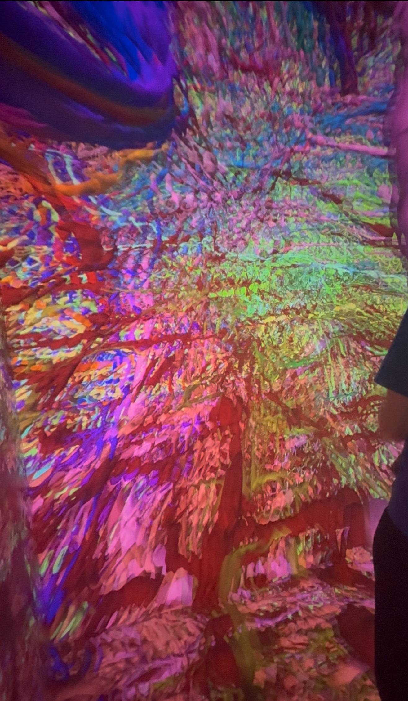
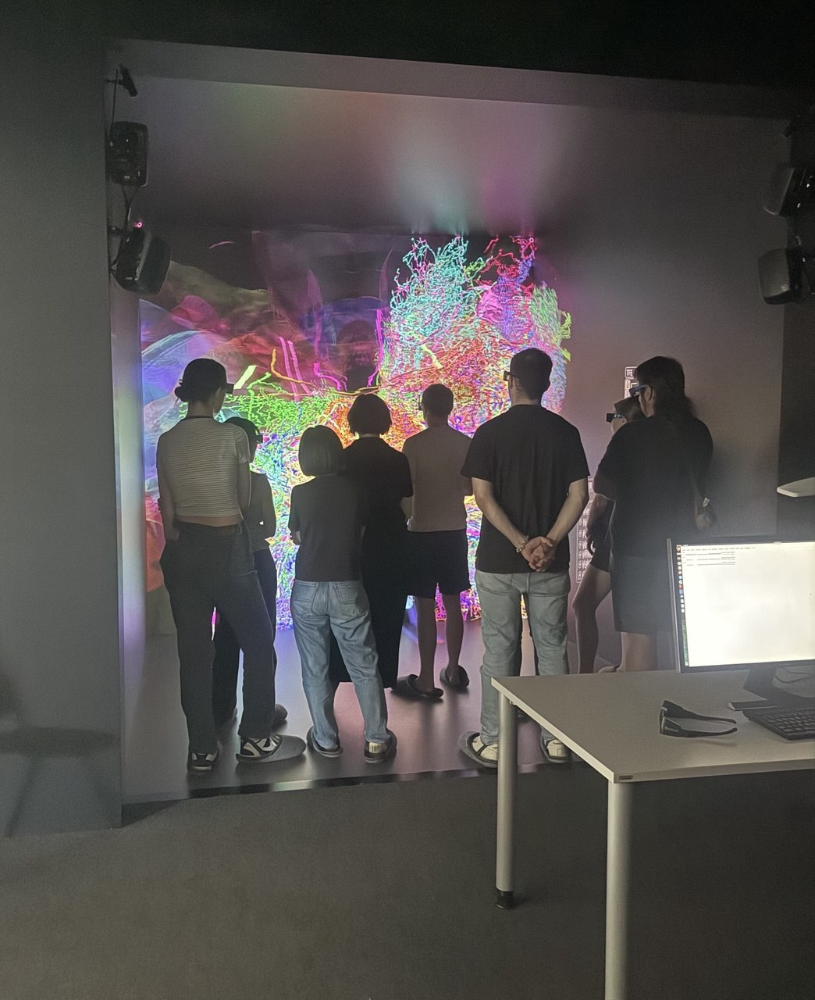
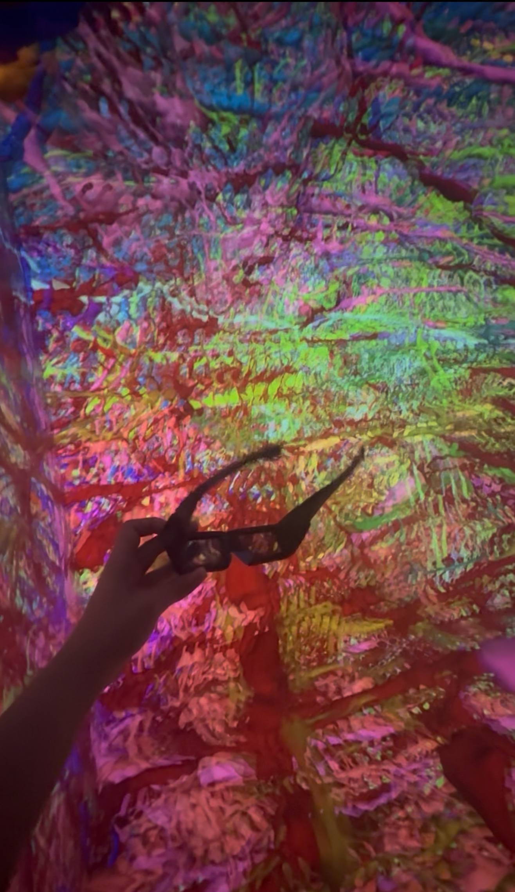

Sitzung 6: CAVE am ITCC und Virtual Reality
Einleitung: In dieser Sitzung wurde der CAVE (Cave Automatic Virtual Environment) am ITCC der Universität zu Köln vorgestellt. Es wurde erklärt, wie reale Orte und Objekte digital erfasst und als virtuelle 3D-Umgebung dargestellt werden können. Während der Führung erklärte Daniel Wickeroth die Technik des CAVE und zeigte verschiedene Beispiele aus der Forschung.
Der CAVE
Der CAVE ist ein Raum, dessen Wände, Boden und Decke als Projektionsflächen genutzt werden. Mit einer 3D-Brille entsteht das Gefühl, mitten in einer virtuellen Umgebung zu stehen. Dadurch können räumliche Strukturen besser betrachtet und verstanden werden.
Weiterführender Link: Universität zu Köln – CAVE am ITCC
Digitale 3D-Modelle
Anschließend wurde erklärt, wie solche 3D-Modelle entstehen. Dafür wird ein terrestrischer Laserscanner verwendet. Er misst viele einzelne Punkte und nimmt zusätzlich Farbinformationen mit einer Kamera auf. Danach verbindet der Computer beide Datensätze zu einem digitalen 3D-Modell. Die Modelle bestehen aus sehr vielen kleinen Punkten. Liegen diese Punkte dicht nebeneinander, entsteht für uns der Eindruck einer geschlossenen Oberfläche.
Virtuelle Beispiele
Im CAVE konnten wir verschiedene virtuelle Modelle betrachten. Zuerst besichtigten wir ein digitalisiertes römisches Grab. Dabei wurde erklärt, dass einige Teile original erhalten sind und andere später restauriert wurden. Außerdem wurden weitere 3D-Modelle gezeigt. Dazu gehörten Darstellungen des menschlichen Körpers, zum Beispiel das Herz und Nervenzellen. So konnte man verschiedene wissenschaftliche Modelle aus einer neuen räumlichen Perspektive betrachten.
Virtual Reality
Während der Vorführung wurde deutlich, dass Virtual Reality sehr real wirken kann. Obwohl man weiß, dass alles nur virtuell ist, kann das Gehirn Situationen wie Höhe oder einen möglichen Sturz trotzdem als echt wahrnehmen. Deshalb reagieren manche Menschen mit Angst. Aus diesem Grund kann Virtual Reality auch in der Therapie eingesetzt werden, zum Beispiel bei Menschen mit Höhenangst. Gleichzeitig gibt es einige Probleme. Die Technik ist teuer und während der Therapie kann die Therapeutin oder der Therapeut die Mimik der Patientinnen und Patienten oft nicht sehen. Dadurch ist es schwieriger, ihre Reaktionen richtig einzuschätzen.
Virtual Reality und Realität
In der realen Welt bleiben die Objekte an ihrem Platz und der Mensch bewegt sich durch den Raum. In der Virtual Reality bleibt die Person an einem Ort, während sich die virtuelle Umgebung bewegt oder verändert. Dadurch entsteht das Gefühl, sich in einer anderen Welt zu befinden.
Fazit
Die Exkursion hat gezeigt, wie reale Orte und Objekte mit moderner Technik digital erfasst und als virtuelle 3D-Modelle dargestellt werden können. Dadurch können räumliche Strukturen besser verstanden und wissenschaftliche Inhalte anschaulicher dargestellt werden.
Material aus der Sitzung


